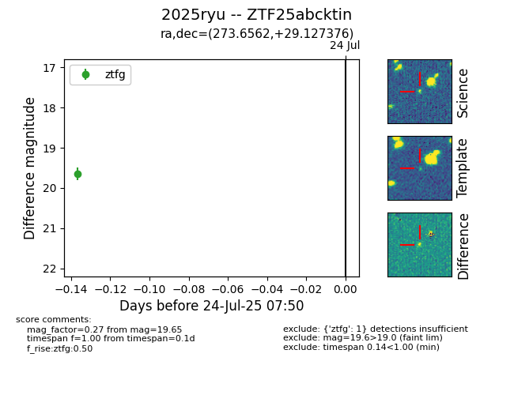

Target ZTF25abcktin at 2025-07-24 07:50, see:
FINK: fink-portal.org/ZTF25abcktin
Lasair: lasair-ztf.lsst.ac.uk/objects/ZTF25abcktin
ALeRCE: alerce.online/object/ZTF25abcktin
TNS: wis-tns.org/object/2025ryu
YSE: ziggy.ucolick.org/yse/transient_detail/2025ryu
alt names
ZTF25abcktin (ztf,fink)
2025ryu (tns,yse)
coordinates:
equatorial (ra, dec) = (273.6562,+29.12738)
galactic (l, b) = (56.1273,+20.26077)
photometry
last ztfg=19.65
1 ztfg detections
